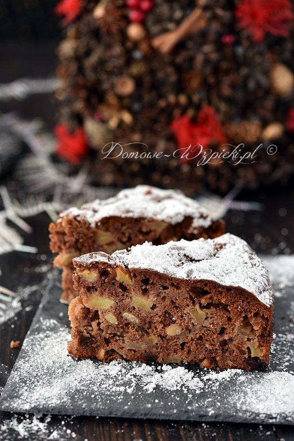

Piernik z jabłkami

Opis
Miękki, mocno puszysty i wilgotny piernik z kawałkami jabłek. Konsystencją nie przypomina klasycznego piernika, a jedynie smakiem. Jest delikatny, lekki, a dzięki jabłkom zachowuje długo świeżość.
Polecam ten wypiek szczególnie w okresie świąt Bożego Narodzenia.
Składniki
- 4 jajka
- ¼ szklanki miodu
- 120g cukru
- 150ml oleju np. rzepakowego
- 300g mąki pszennej (2 szklanki)
- 1 łyżeczka sody oczyszczonej
- 1 łyżeczka proszku do pieczenia
- 1 łyżka kakao
- 4 łyżeczki przyprawy do piernika
- 60g orzechów (½ szklanki)
- 60g rodzynek (½ szklanki)
- 1 kg jabłek
Sposób przygotowania
-
W misce wymieszać mąkę, sodę, proszek do pieczenia, kakao i przyprawę do piernika. Odstawić na bok.
-
Orzechy posiekać i wymieszać z rodzynkami. Odstawić na bok.
-
Jabłka umyć, osuszyć, obrać, przekroić na ćwiartki, wydrążyć gniazda nasienne i pokroić w kostkę. Odstawić na bok.
-
Całe jajka ubić z cukrem i miodem na puszystą, kremową masę. (Miksować na najwyższych obrotach co najmniej 5 minut). Dalej miksując dodawać stopniowo olej. Zmniejszyć obroty miksera na najmniejsze i dodać mieszankę z mąką. Miksować krótko, tylko do momentu połączenia się składników. Wyłączyć mikser i wmieszać orzechy z rodzynkami szpatułką lub łyżką drewnianą. Na końcu wmieszać kawałki jabłek. (Jabłek jest dużo w stosunki do ciasta ;)).
-
Dno tortownicy o średnicy 26cm wyłożyć papierem do pieczenia, a następnie zacisnąć obręcz. Ciasto przełożyć do formy.
-
Piec w nagrzanym piekarniku około 1 godziny w temperaturze 180°C, do suchego patyczka. Po upieczeniu pozostawić ciasto w piekarniku, przy uchylonych drzwiczkach, aż lekko przestygnie. Następnie wyciągnąć na blat i pozostawić do całkowitego ostygnięcia. Podawać oprószone cukrem pudrem.